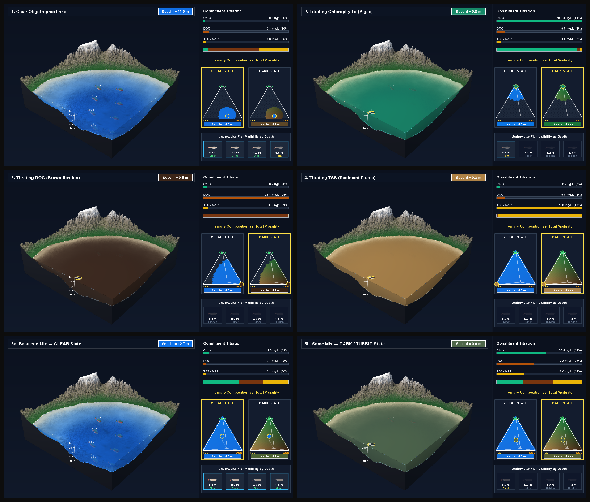
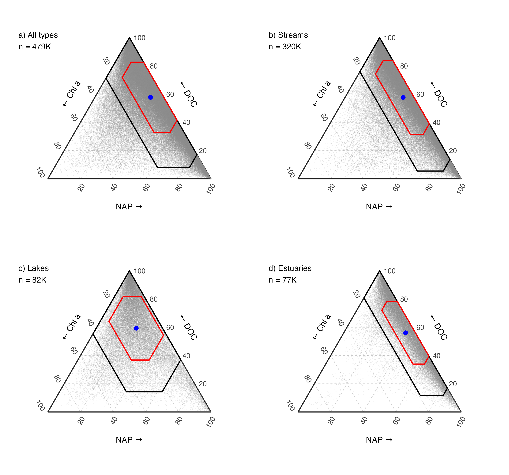

Ternary Partitioning of Continental-Scale Water Clarity
Bio-Optical Modeling and Ternary Diagnostics Across U.S. Streams, Lakes, and Estuaries (1970–2025)
October 21, 2026
Overview
Water clarity is one of our oldest and most intuitive lenses into aquatic ecosystems. For more than a century, hydrologists and limnologists have lowered Secchi disks into rivers, lakes, and estuaries to measure how deeply light penetrates the water column. Yet Secchi disk depth (\(z_{SD}\), in meters) alone tells us only how much light is lost—not what is blocking it.
Across inland and coastal waters, diffuse light attenuation (\(k_d = 1 / z_{SD}\); Lee et al. 2015) is governed by pure water (\(k_w\)) and three primary light-attenuating constituents (LACs): non-algal particles (NAP), dissolved organic carbon (DOC), and phytoplankton chlorophyll a (\(\text{Chl }a\)). Under the additive Beer–Lambert model, Secchi depth can be written directly in terms of constituent concentrations:
\[z_{SD} = \frac{1}{k_w + \alpha_{\text{NAP}}\,\text{NAP} + \alpha_{\text{DOC}}\,\text{DOC} + \alpha_{\text{Chl }a}\,\text{Chl }a}\]
To understand how these three constituents partition water clarity across the contiguous United States, we built an open-source pipeline on top of the AquaMatch data suite (Brousil et al. 2024a, 2024b, 2025; De La Torre et al. 2025)—the successor to AquaSat (Ross et al. 2019). Combining 277,382 simultaneous four-variable matchups (Secchi + Chl a + DOC + TSS/SSC) for model calibration with 478,929 three-constituent matchups across 39,396 monitoring stations (1970–2025), we estimate regional specific attenuation coefficients (\(\alpha_i\)) across U.S. EPA Level III ecoregions and project nearly half a million water quality observations into ternary attenuation space.
Why Optical Partitioning & Total Visibility Both Matter ({sonicray} 3D Simulation)
Ternary diagrams are a powerful way to visualize which constituent dominates light attenuation (\(f_{\text{NAP}} + f_{\text{DOC}} + f_{\text{Chl }a} = 1\)), but proportions alone miss a critical physical dimension: total visibility (\(z_{SD}\)). Two lakes sitting at the exact same coordinate in ternary space can represent either a crystal-clear oligotrophic basin (\(z_{SD} > 5\text{ m}\)) or a murky waterbody (\(z_{SD} < 0.4\text{ m}\)) when total constituent concentrations scale up. Moreover, each constituent alters the underwater light field in a distinct way:
- Chlorophyll a (Algae): Absorbs blue and red light while cells scatter green wavelengths, shifting water from deep blue to emerald green.
- DOC (Brownification): Absorbs short wavelengths exponentially with negligible particulate scattering, turning water into dark tea-stained blackwater.
- NAP / TSS (Sediment): Strongly backscatters broadband light, turning water chalky tan/ochre and driving the steepest collapse in Secchi visibility.
To visualize both ternary composition and total visibility simultaneously, we path-traced a naturalistic 3-hill lake basin on an Apple Silicon Metal GPU using {sonicray}’s native dielectric and Beer–Lambert water engine (sr_upload_mesh(water = ...) + sr_water_preset()). Four submerged 3D trout and white Secchi spheres sit at 0.4 m, 0.9 m, 1.5 m, and 2.1 m depth. In Act I (Clear Water Regime), low constituent loads shift the ternary position while all four depth tiers remain visible; in Act II (Dark/Turbid Regime), high loads of Chl a, DOC, and TSS shift the ternary diagram into its dark regime and progressively extinguish visibility from 2.1 m up to 0.4 m:
3D Bio-Optical Titration Film (path-traced in {sonicray}). Left: 3D lake basin with submerged fish and Secchi spheres at 0.4 m, 0.9 m, 1.5 m, and 2.1 m. Right: Live constituent titration and a dynamic ternary diagram transitioning from the Clear Water Regime (Act I) into the Dark/Turbid Regime (Act II).

Figure 0.1: Six keyframe stages from the {sonicray} 3D water titration: (1–3) Act I Clear Water Regime across oligotrophic and low-load ternary sweeps (fish and Secchi spheres remain visible across 0.4–2.1 m), followed by (4–6) Act II Dark/Turbid Regime during an algal bloom (high Chl a), brownification (high DOC), and a sediment plume (high TSS).
Continental Ternary Partitioning at a Glance
Across 478,929 co-located U.S. water quality samples, dissolved organic matter (DOC, 58.8%) and non-algal suspended sediment (NAP, 33.0%) dominate average non-water light attenuation in streams and estuaries, whereas lakes span the full ternary simplex with more than double the phytoplankton attenuation share (Chl a, 16.5% vs. 6.7% in streams and 5.8% in estuaries):

Figure 0.2: Continental ternary partitioning of non-water light attenuation across (a) all U.S. waters (n = 478,929), (b) streams, (c) lakes, and (d) estuaries (see Section 8 and Section 9 for full diagnostics).
Pipeline Funnel & Dataset Summary
| Stage | Description | Observations (n) | Unique Sites | Pipeline Section |
|---|---|---|---|---|
|
Harmonized WQP records (sdd, chla, doc, tss; 1970–2025) | 12,580,000+ | 150,000+ | Downloaded via AquaMatchr (Section 1) |
|
Same-site, same-day Chl a + DOC + TSS/SSC | 486,689 | 40,021 | Ambient Stream, Lake, and Estuary stations (Section 2) |
|
Same-site, same-day Secchi + Chl a + DOC + TSS/SSC | 281,439 | 22,888 | Excludes turbidity tubes & <=0.01 m floor flags (Section 2) |
|
Sub-detection values floored at EPA/USGS MDLs | 281,439 | 22,888 | Chl a 0.10 µg/L, DOC 0.25 mg/L, TSS 0.50 mg/L (Section 4) |
|
A priori optical plausibility |log10(kd / kd,lit)| <= 0.80 | 277,382 | 22,567 | Final Training Set: removes 1.44% discordant outliers (Section 4) |
|
All 3-constituent matchups inside training bounds (Model 7) | 478,929 | 39,396 | 275,287 Measured + 203,642 Modeled Secchi (Section 8) |
|
Long-term stations with > 7 matchups (Fig. 4) | 419,690 | 9,128 | 5,303 streams, 2,362 lakes, 1,463 estuaries (Section 9) |
Reproducing the Workflow & Code Architecture
source('R/00_setup.R')
fetch_all() # Downloads harmonized AquaMatch EDI products + spatial layers
bookdown::render_book() # Runs pipeline, saves figs/*.png & *.pdf, builds docs/index.html| Script / Folder | Role |
|---|---|
R/00_setup.R, R/00_download.R |
Package setup, parameter registry (P), and programmatic {AquaMatchr} / spatial data retrieval |
R/prep.R |
Same-day matchup assembly, Gohin et al. (2005) NAP derivation, MDL floors, and Beer–Lambert plausibility screening |
R/ecoregions.R, R/models.R |
EPA Level I–IV ecoregion joins, Models 1–10 OLS fitting, stability cones, and Model 7 ternary projection |
R/ternary.R, R/figures.R |
Ternary geometry, Sutherland–Hodgman \(\pm k\text{ SD}\) polygon clipping, and Figures 1–4 / S1 |
R/sonicray_lake.R |
Apple Silicon Metal GPU 3D lake optical titration renderer ({sonicray}) |
R/claims.R, R/verify.R |
Dominance-regime hypothesis tests and automated 13-point verification audit (Section 10) |